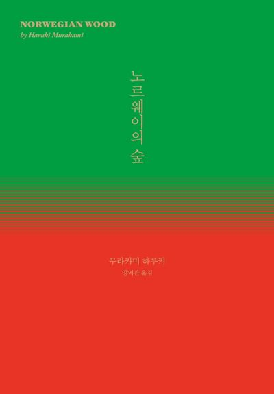

인생 노래
릴 나스 엑스가 부른 「Star Walkin'」은 2022 롤드컵 공식 테마곡입니다. 저는 오래전부터 프로게이머 Deft의 팬이었고, 그래서 2022년도에는
자연스럽게 Deft가 속한 프로 팀 DRX를 응원했습니다. 항상 경기를 챙겨보는 것은 물론, 직관을 하러 티켓팅을 하고, 고향에서 서울로 KTX를 타고
다녀오기까지 하는 등 꽤나 열성적인 팬이었습니다. 하지만 DRX는 그 당시 실력이 좋은 팀은 아니었습니다. 제가 패귀 요정일 수도 있지만,
직관을 갈 때마다 지는 건 항상 우리 팀이었습니다. 결국 국내 마지막 리그에서 10팀 중 6위로 마무리하는 등 좋지 않은 성적을 보였습니다.
DRX는 롤드컵 선발전부터 하위 시드에서 힘겹게 올라와 겨우 마지막 시드를 차지해 롤드컵에 출전했습니다. 이 당시 많은 사람들은 DRX를
예선전이나 많이 올라가봤자 8강 정도의 전력으로 예상했습니다. 저 또한 올해 우리 팀의 롤드컵 경기라도 볼 수 있어서 다행이라고
생각했으니까요. 하지만 DRX는 동화를 신화로 만들어냈습니다. 8강에서 작년 롤드컵 챔피언을 짜릿한 역전승으로 꺾어내고, 4강에선 국내 리그
1위를 이기며 결승에 진출했습니다. 그리고 마지막 결승에서는 처절한 혈투 끝에 누구도 예상 못한 우승컵의 주인공이 되었습니다. 여러분도 알고
계실 "중요한 건 꺾이지 않는 마음"이라는 문장이 탄생한 이변이었습니다. 당시 저는 많은 감명을 받았습니다. DRX가 보여준 끈기와 도전 정신은
제게도 큰 영향을 미쳤습니다. 그들의 플레이를 보며 저도 제 삶에서 포기하지 않고 끝까지 나아가야겠다는 다짐을 하게 되었습니다. 이제 「Star
Walkin'」을 들을 때마다 그 감동의 순간이 떠오릅니다. 단순한 롤드컵 우승 이야기가 아니라, 포기하지 않는 마음이 어떻게 기적을
만들어내는지를 보여준 DRX의 2022 롤드컵 여정. 저는 앞으로도 그들의 도전을 기억하며, 저 역시 제 삶에서 저만의 신화를 써 내려가고
싶습니다.
인생 도서

「노르웨이의 숲」은 「상실의 시대」라는 이름으로도 잘 알려진 무라카미 하루키의 소설입니다. 이 책과의 첫 만남은 군대에서 불침번을 서던 중
우연히 접하면서 시작되었습니다. 특유의 수박바 색깔의 표지는 단번에 제 시선을 사로잡았고, 단순히 표지만으로도 충분히 관심을 끌기에
성공적이었습니다🍉. 그 당시 저는 깊이 있는 문학을 이해할 정도로 성숙하지 않았지만, 주변인들과의 비극적인 관계를 이겨내려는 주인공
와타나베의 이야기가 인상적이었습니다. 와타나베는 끊임없이 상실과 마주하며 성장해 나가고, 그 과정에서 자신만의 방식으로 고통을 견뎌
나갑니다. 그의 모습은 저에게 강한 여운을 남겼고, 결국 제 인생에서 흔치 않은 경험인 다회독을 하게 만들었습니다. 시간이 지나 다시 찾은
「노르웨이의 숲」은 이전과는 또 다른 감정을 불러일으켰습니다. 처음 읽었을 때는 단순히 청춘의 사랑과 방황을 다룬 이야기로 보였지만,
재독을 하면서 와타나베가 겪는 상실의 무게와 그로 인해 흔들리는 내면이 더욱 깊이 와닿았습니다. 그는 주변의 죽음과 이별을 반복적으로
경험하면서도, 끝내 명확한 해답을 찾지 못한 채 방황합니다. 그 모습은 어쩌면 인간이라면 누구나 겪게 되는 성장통이자 삶의 본질적인 질문을
던지는 과정처럼 느껴졌습니다. 당시 저는 전공과 개발 사이에서 고민하고 있던 시기였고, 어떤 길을 선택해야 할지 갈피를 잡지 못한 채
방황하고 있었습니다. 그래서인지 군대에서 이 책을 유독 여러 번 읽었던 이유가 단순한 우연이 아니라, 와타나베의 이야기가 제 모습과 많이
닮아 있었기 때문이 아닐까 하는 생각이 듭니다. 그때는 미처 깨닫지 못했지만, 이 소설이 제게 던졌던 질문들은 시간이 지나서야 비로소 의미를
가지게 되었습니다. 「노르웨이의 숲」은 단순한 러브스토리를 넘어, 성장과 상실, 방황과 극복을 그린 작품입니다. 그리고 그 속에서 우리는
각자의 삶을 비추어 볼 수 있는 기회를 얻게 됩니다. 앞으로도 인생의 어느 순간 다시 펼쳐보고 싶어지는 책으로 남을 것 같습니다.